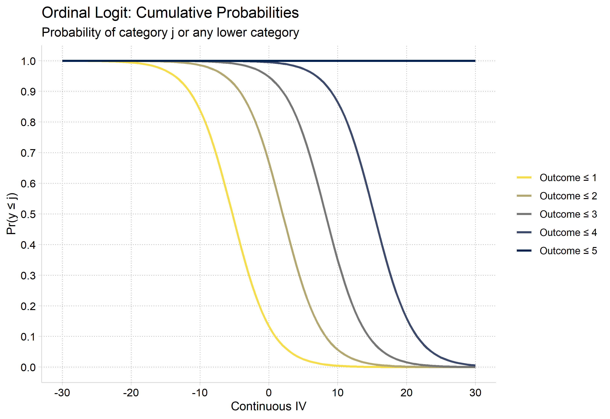
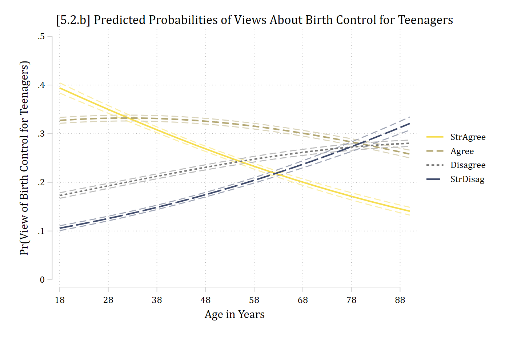
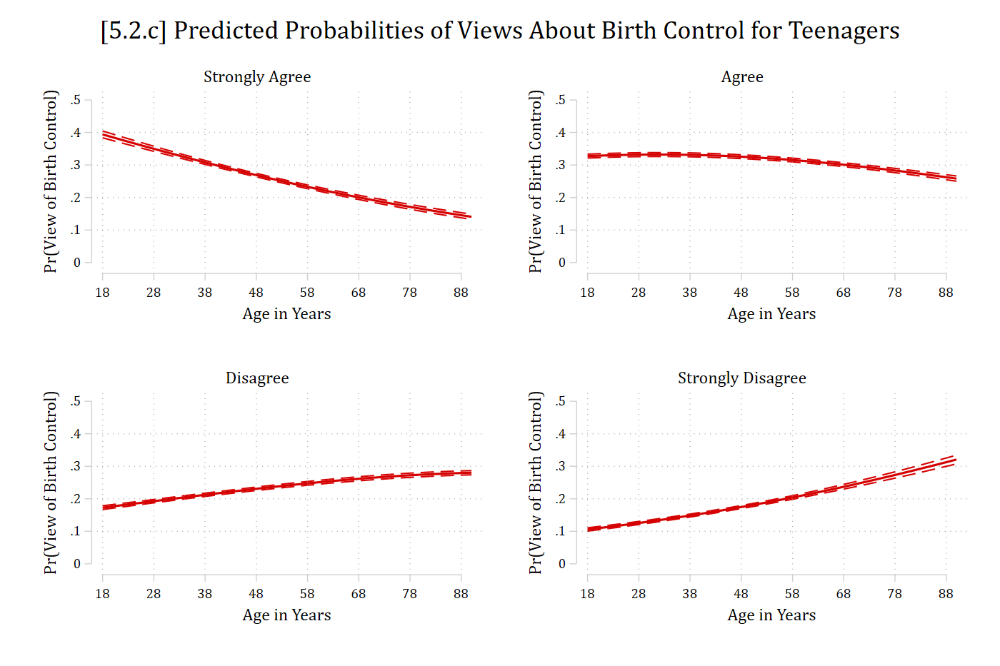
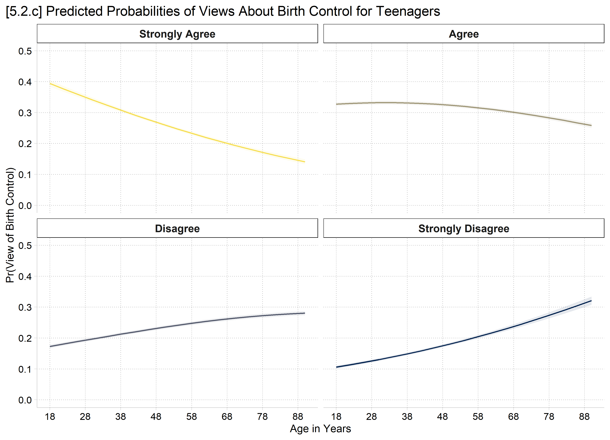
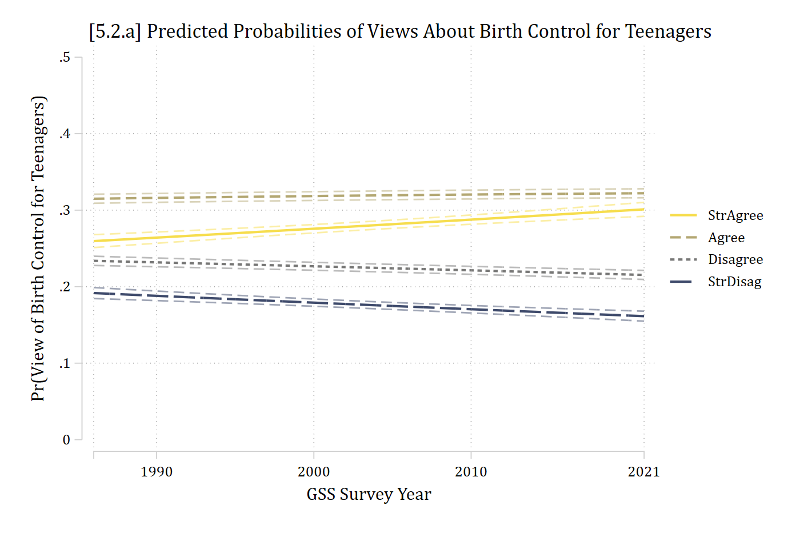
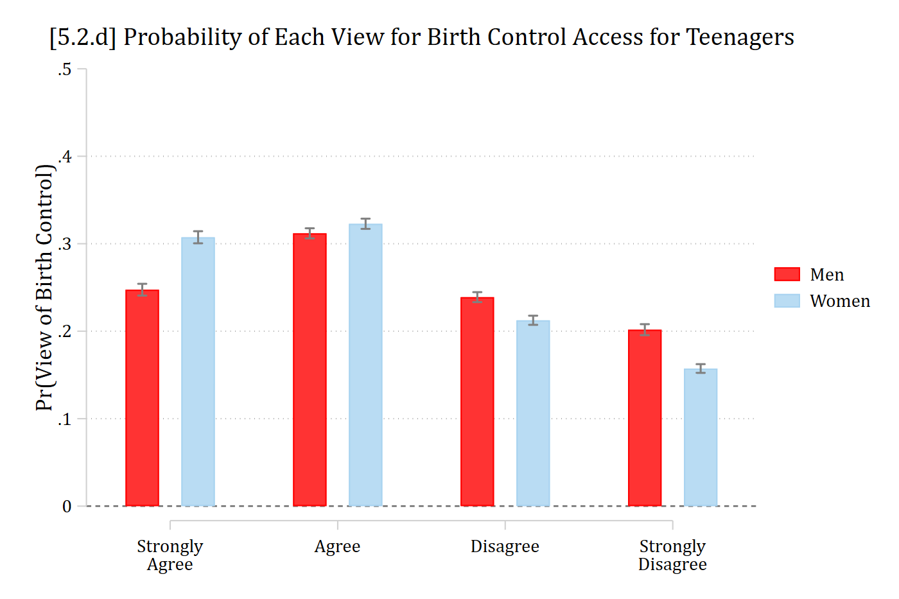
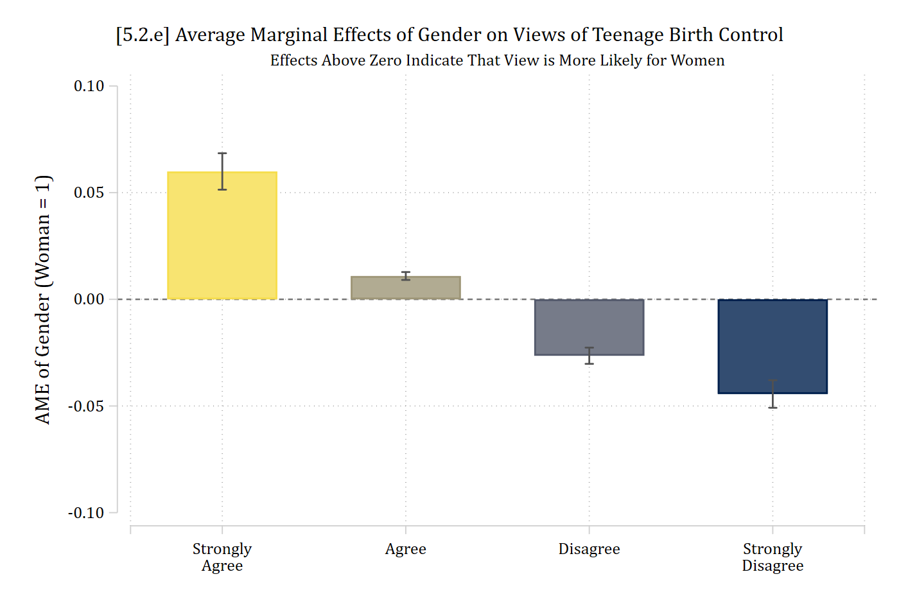
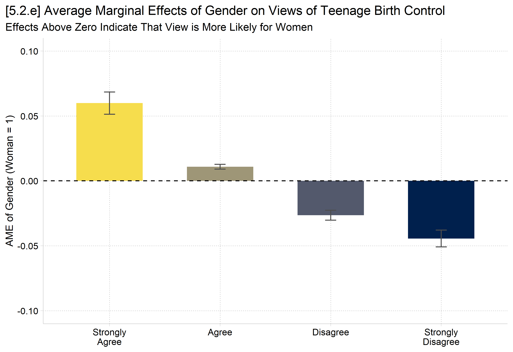
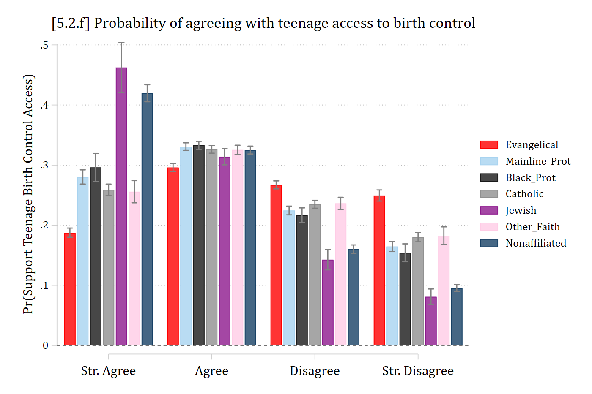
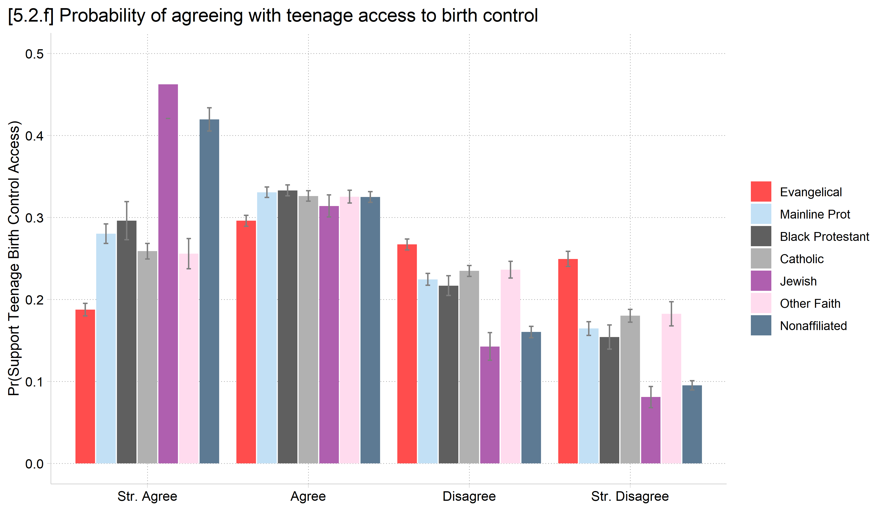

library(haven) # import Stata data and labelslibrary(dplyr) # data manipulationlibrary(sjmisc) # frq() frequency tableslibrary(ggplot2) # graphslibrary(MASS) # ordinal logit: polr()library(marginaleffects) # predictions and marginal effectslibrary(cleanplots) # graph schemecleanplots_defaults()source("https://raw.githubusercontent.com/tdmize/Rfunctions/main/ME_helper_functions.R")# Center changes in continuous IVs on each observation's valueoptions(marginaleffects_contrast_direction ="center")gss <-read_dta("https://tdmize.github.io/data/data/cda_gss.dta")# Religious attendee = attends about once a month or moregss <- gss |>mutate(religous =case_when(attend <=3~0, attend >=4~1)) |>filter(year >=1986)# Keep model variables; drop any missing datagss <- gss[c("pillok", "year1972", "religous", "college", "age", "woman", "race3","faminc", "reltrad", "degree")]gss <- gss[complete.cases(gss[c("pillok", "year1972", "religous", "college", "age","woman", "race3", "faminc")]), ]# Ordinal DV as a factor with short labels; binary/nominal variables as factorsgss <- gss |>mutate(pillok =factor(pillok, levels =1:4,labels =c("StrAgree", "Agree", "Disagree", "StrDisag")),religous =factor(religous, labels =c("Not Religious", "Religious")),across(c(college, woman, race3, reltrad, degree), as_factor),year1972 =as.numeric(year1972)) |>droplevels()frq(gss$pillok)
# Simulated data from 5.0 (see the code there)simmod <-polr(y ~ c + b + x1 + x2, data = sim, Hess =TRUE)# Cumulative probabilities: Pr(y <= j) is the sum of Pr(y = 1) to Pr(y = j)pr_cum <-predictions(simmod, newdata =datagrid(c =seq(-30, 30, .5))) |>group_by(c) |>mutate(cumulative =cumsum(estimate))ggplot(pr_cum, aes(x = c, y = cumulative, color = group)) +geom_line(linewidth =1) +scale_color_viridis_d(option ="cividis", end = .95, direction =-1,labels =paste("Outcome ≤", 1:5)) +scale_x_continuous(breaks =seq(-30, 30, 10)) +scale_y_continuous(breaks =seq(0, 1, .1)) +labs(title ="Ordinal Logit: Cumulative Probabilities",subtitle ="Probability of category j or any lower category",x ="Continuous IV", y ="Pr(y ≤ j)", color =NULL)

Predicted probabilities in ordinal models
Instead of the cumulative probabilities, the probabilities of a given outcome category j are usually of most interest (i.e., these are often \(\eta\) for ordinal logit). Can calculate the probability for a specific outcome category j for an ordinal DV with J total categories:
Stata builds the plot CIs first, then lines. So, graph aspects 1, 2, 3, and 4 are CIs. To label the lines themselves, start the legend at J + 1 (5 here)
*5.2.b - predictions for continuous IV ageestrestore pillmod
(results pillmod are active now)
qui margins, at(age=(18(4)90))marginsplot, recastci(rline) ciopt(lpat(dash) col(*.5)) /// plotop(lwid(*1.5) msym(none)) ylab(0(.1).5) ///xlabel(18(10)88) xtitle("Age in Years") ///ytitle("Pr(View of Birth Control for Teenagers)") ///title("[5.2.b] Predicted Probabilities of Views About Birth Control for Teenagers", size(*1.1)) ///legend(order(5 "StrAgree" 6 "Agree" 7 "Disagree" 8 "StrDisag")) ///scheme(cleanplots5)
Variables that uniquely identify margins: age

R’s plot_predictions default would hold controls at modal person. To get average predictions, need the newdata statement with a “counterfactual” grid_type. Add “group” to the by function to get separate lines for each outcome
# 5.2.b - predictions for continuous IV ageplot_predictions(pillmod, by =c("age", "group"),newdata =datagrid(age =seq(18, 90, 4), grid_type ="counterfactual")) +scale_color_viridis_d(option ="cividis", end = .95, direction =-1) +scale_fill_viridis_d(option ="cividis", end = .95, direction =-1) +scale_x_continuous(breaks =seq(18, 88, 10)) +scale_y_continuous(breaks =seq(0, .5, .1), limits =c(0, .5)) +labs(title ="[5.2.b] Predicted Probabilities of Views About Birth Control for Teenagers",x ="Age in Years", y ="Pr(View of Birth Control for Teenagers)",color =NULL, fill =NULL) +theme(plot.title.position ="plot")
*5.2.c - same plot of age but as small multiples*NOTE: use colorpalette to get RGB codes for colors inscheme**(otherwise, all plots will usedefault 1st color)colorpalette cleanplots5, globals
qui margins, at(age=(18(4)90)) predict(outcome(1))marginsplot, recastci(rline) ciopt(lpat(dash) col($civ1)) /// plotop(lcol($civ1) lwid(*1.5) msym(none)) ylab(0(.1).5) ///xlabel(18(10)88) xtitle("Age in Years") ///ytitle("Pr(View of Birth Control)") ///title("Strongly Agree") name(pr1, replace)
Variables that uniquely identify margins: age
qui margins, at(age=(18(4)90)) predict(outcome(2))marginsplot, recastci(rline) ciopt(lpat(dash) col($civ2)) /// plotop(lcol($civ2) lwid(*1.5) msym(none)) ylab(0(.1).5) ///xlabel(18(10)88) xtitle("Age in Years") ///ytitle("Pr(View of Birth Control)") ///title("Agree") name(pr2, replace)
Variables that uniquely identify margins: age
qui margins, at(age=(18(4)90)) predict(outcome(3))marginsplot, recastci(rline) ciopt(lpat(dash) col($civ3)) /// plotop(lcol($civ3) lwid(*1.5) msym(none)) ylab(0(.1).5) ///xlabel(18(10)88) xtitle("Age in Years") ///ytitle("Pr(View of Birth Control)") ///title("Disagree") name(pr3, replace)
Variables that uniquely identify margins: age
qui margins, at(age=(18(4)90)) predict(outcome(4))marginsplot, recastci(rline) ciopt(lpat(dash) col($civ4)) /// plotop(lcol($civ4) lwid(*1.5) msym(none)) ylab(0(.1).5) ///xlabel(18(10)88) xtitle("Age in Years") ///ytitle("Pr(View of Birth Control)") ///title("Strongly Disagree") name(pr4, replace)
Variables that uniquely identify margins: age
graphcombine pr1 pr2 pr3 pr4, ///title("[5.2.c] Predicted Probabilities of Views About Birth Control for Teenagers")

# 5.2.c - same plot of age but as small multiplesplot_predictions(pillmod, by =c("age", "group"),newdata =datagrid(age =seq(18, 90, 4), grid_type ="counterfactual")) +facet_wrap(~ group, labeller =as_labeller(c(StrAgree ="Strongly Agree",Agree ="Agree", Disagree ="Disagree", StrDisag ="Strongly Disagree"))) +scale_color_viridis_d(option ="cividis", end = .95, direction =-1) +scale_fill_viridis_d(option ="cividis", end = .95, direction =-1) +scale_x_continuous(breaks =seq(18, 88, 10)) +scale_y_continuous(breaks =seq(0, .5, .1), limits =c(0, .5)) +labs(title ="[5.2.c] Predicted Probabilities of Views About Birth Control for Teenagers",x ="Age in Years", y ="Pr(View of Birth Control)") +theme(plot.title.position ="plot", legend.position ="none")

Nominal and ordinal color palettes
Most graphics themes’ palettes are nominal
I.e., They do not imply ordering by the color choices
cleanplots, which I use in these notes, defaults to a nominal palette
Age patterns views about teenager’s access to birth control in the US, with older adults less likely to support teenagers having access to birth control without their parent’s consent. For example, a standard deviation increase in age (about 17 years) is associated with a 6 percentage point decline in “strongly agreeing” that teenagers should have access to birth control. In contrast, the probability of “strongly disagreeing” increases by about 5 percentage points as someone ages a standard deviation. There are smaller, but similarly patterned effects on the probability of “agreeing” (ME+SD = -0.011) and “disagreeing” for increases in age (ME+SD = 0.028).
*NOTE: scheme(cleanplots#) applies ordinal colorscheme just to that one**graph. # specifies how many colors*5.2.a - predictions for continuous IV yearestrestore pillmod
(results pillmod are active now)
qui margins, at(year1972=(14(1)49))marginsplot, recastci(rline) ciopt(lpat(dash) col(*.5)) /// plotop(lwid(*1.5) msym(none)) /// ylab(0(.1).5) xtitle("GSS Survey Year") /// xlab(14 " " 18 28 38 49) ///ytitle("Pr(View of Birth Control for Teenagers)") ///title("[5.2.a] Predicted Probabilities of Views About Birth Control for Teenagers", size(*1.1)) ///legend(order(5 "StrAgree" 6 "Agree" 7 "Disagree" 8 "StrDisag")) ///scheme(cleanplots5)
Variables that uniquely identify margins: year1972

# 5.2.a - predictions for continuous IV yearplot_predictions(pillmod, by =c("year1972", "group"),newdata =datagrid(year1972 =14:49, grid_type ="counterfactual")) +scale_color_viridis_d(option ="cividis", end = .95, direction =-1) +scale_fill_viridis_d(option ="cividis", end = .95, direction =-1) +scale_x_continuous(breaks =c(18, 28, 38, 49), labels =c("1990", "2000", "2010", "2021")) +scale_y_continuous(breaks =seq(0, .5, .1), limits =c(0, .5)) +labs(title ="[5.2.a] Predicted Probabilities of Views About Birth Control for Teenagers",x ="GSS Survey Year", y ="Pr(View of Birth Control for Teenagers)",color =NULL, fill =NULL) +theme(plot.title.position ="plot")
The effect of time has been to increase widespread acceptance of birth control, though change in opinions has been small in magnitude. Specifically, since the GSS began asking this question in 1986, to the latest survey in 2021, people have become more likely to strongly agree or agree that teenagers should have widespread access to birth control (MEst_agree = 0.041; MEagree = 0.007). In contrast, in more recent years people are less likely to disagree or strongly disagree with teenage birth control access (MEdisagree = -0.018; MEst_disagree = -0.030). It is worth noting that although all of these changes are statistically significant, all are relatively small in substantive size.
In Stata, marginsplot is not ideal for plots of predictions for nominal/ordinal outcome models
Instead, store predictions from margins and plot with coefplot
coefplot will use the saved estimate names for the legend, so save time by naming them neatly
// 5.2.d - Show pr() of each nominal (binary) IV levelestrestore pillmod
(results pillmod are active now)
qui margins, at(woman=0) posteststore Menestrestore pillmod
(results pillmod are active now)
qui margins, at(woman=1) posteststore Womencoefplot Men Women, ///recast(bar) barw(0.2) vertical yline(0) ylab(0(.1).5) /// ciopts(recast(rcap) color(gs8)) citop scale(1.1) /// xlab(1 `""Strongly""Agree""' 2 "Agree" 3 "Disagree" 4 `""Strongly""Disagree""') /// ytitle("Pr(View of Birth Control)") /// title("[5.2.d] Probability of Each View for Birth Control Access for Teenagers")

In R, use plot_predictions, the facet_wrap function, and include “group” in the by function for a fairly nice dot plot
Make sure to specify the counterfactual grid_type in newdata for average predictions, rather than predictions for a modal person
# 5.2.d - Show pr() of each nominal (binary) IV levelplot_predictions(pillmod, by =c("woman", "group"),newdata =datagrid(woman = unique, grid_type ="counterfactual")) +facet_wrap(~ group, nrow =1) +scale_color_viridis_d(option ="cividis", end = .95, direction =-1) +scale_y_continuous(breaks =seq(0, .5, .1), limits =c(0, .5)) +labs(title ="[5.2.d] Probability of Each View for Birth Control Access for Teenagers",x =NULL, y ="Pr(View of Birth Control)") +theme(plot.title.position ="plot", legend.position ="none")
In Stata, estimate MEs using margins, dydx( ) and then plot with marginsplot
Works well as dot plot with recast(scatter) or bar chart with recast(bar)
Add yline(0) to easily see where a null effect is
Default is all same color dots/bars; to apply an ordinal palette, specify _predict in xdimension() and plotdimension() options
*5.2.e - MEs forgraph above (MEs for woman)estrestore pillmod
(results pillmod are active now)
qui margins, dydx(woman) post*marginsplot defaults to bars of the same color; specify _predict in the**xdimension() and plotdimension() to apply ordinal colorscheme()marginsplot, recast(bar) ciopts(color(gs5)) /// xdimension(_predict) plotdimension(_predict) legend(off) /// xlab(0.5 " " 1 `""Strongly""Agree""' 2 "Agree" /// 3 "Disagree" 4 `""Strongly""Disagree""' 4.5 "") /// yline(0) plotopts(barw(0.6)) ylab(-.1(.05).1, format(%4.2f)) /// ytitle("AME of Gender (Woman = 1)") xtitle("") /// title("[5.2.e] Average Marginal Effects of Gender on Views of Teenage Birth Control") /// subtitle("Effects Above Zero Indicate That View is More Likely for Women", size(small)) /// scheme(cleanplots4)
Variables that uniquely identify margins:

In R, use plot_comparisons and include “group” in the by function for a fairly nice dot plot
Add geom_hline(yintercept = 0) to easily see where a null effect is
# 5.2.e - MEs for gender (woman = 1) as a bar chart in ordinal colorsme_woman <-avg_comparisons(pillmod, variables ="woman")ggplot(me_woman, aes(x = group, y = estimate, fill = group)) +geom_col(width = .6) +geom_errorbar(aes(ymin = conf.low, ymax = conf.high), width = .1, color ="gray30") +geom_hline(yintercept =0, linetype ="dashed") +scale_fill_viridis_d(option ="cividis", end = .95, direction =-1) +scale_x_discrete(labels =c("Strongly\nAgree", "Agree", "Disagree", "Strongly\nDisagree")) +scale_y_continuous(breaks =seq(-.1, .1, .05), limits =c(-.1, .1)) +labs(title ="[5.2.e] Average Marginal Effects of Gender on Views of Teenage Birth Control",subtitle ="Effects Above Zero Indicate That View is More Likely for Women",x =NULL, y ="AME of Gender (Woman = 1)") +theme(plot.title.position ="plot", legend.position ="none")

# Dot plot versionplot_comparisons(pillmod, variables ="woman", by ="group") +geom_hline(yintercept =0, linetype ="dashed") +labs(x =NULL, y ="AME of Gender (Woman = 1)")
In general, women are more supportive of teenagers having access to birth control than are men. Women have a 0.060 higher probability of “strongly agreeing”—and a 0.011 higher probability of agreeing—that teenagers should have access to birth control regardless of their parent’s consent. In contrast, women have lower probabilities of disagreeing or strongly disagreeing, compared to men’s opinions (∆disagree = -0.026, ∆strongly disagree = -0.044)
Interpretation tip: \(\Delta\) or just “ME” are common ways to denote a marginal effect. It is useful to denote the outcome category in a subscript.
***************// Nominal IVs with 3+ categories //****************Add a nominal versionof educational attainment and religious affiliationquiologit pillok c.year1972 c.age i.woman i.reltrad /// i.degree i.race3 c.faminceststore pillmod2*5.2.f - Show pr() of each groupestrestore pillmod2
(results pillmod2 are active now)
qui margins, at(reltrad=1) posteststore Evangelicalestrestore pillmod2
(results pillmod2 are active now)
qui margins, at(reltrad=2) posteststore Mainline_Protestrestore pillmod2
(results pillmod2 are active now)
qui margins, at(reltrad=3) posteststore Black_Protestrestore pillmod2
(results pillmod2 are active now)
qui margins, at(reltrad=4) posteststore Catholicestrestore pillmod2
(results pillmod2 are active now)
qui margins, at(reltrad=5) posteststore Jewishestrestore pillmod2
(results pillmod2 are active now)
qui margins, at(reltrad=6) posteststore Other_Faithestrestore pillmod2
(results pillmod2 are active now)
qui margins, at(reltrad=7) posteststore Nonaffiliatedcoefplot Evangelical Mainline_Prot Black_Prot Catholic Jewish Other_Faith Nonaffiliated, ///recast(bar) barw(0.11) vertical yline(0) ylab(0(.1).5) /// ciopts(recast(rcap) color(gs8)) citop /// xlab(1 "Str. Agree" 2 "Agree" 3 "Disagree" 4 "Str. Disagree", labsize(medsmall)) ///ytitle("Pr(Support Teenage Birth Control Access)") ///title("[5.2.f] Probability of agreeing with teenage access to birth control")

# Nominal IVs with 3+ categories: add religious tradition and educational degreegss2 <- gss[complete.cases(gss[c("reltrad", "degree")]), ] |>droplevels()pillmod2 <-polr(pillok ~ year1972 + age + woman + reltrad + degree + race3 + faminc,data = gss2, Hess =TRUE)# 5.2.f - Show pr() of each grouppr_reltrad <-avg_predictions(pillmod2, by =c("reltrad", "group"),newdata =datagrid(reltrad = unique, grid_type ="counterfactual"))ggplot(pr_reltrad, aes(x = group, y = estimate, fill = reltrad)) +geom_col(position =position_dodge(width = .9), width = .85) +geom_errorbar(aes(ymin = conf.low, ymax = conf.high),position =position_dodge(width = .9), width = .2, color ="gray50") +scale_x_discrete(labels =c("Str. Agree", "Agree", "Disagree", "Str. Disagree")) +scale_y_continuous(breaks =seq(0, .5, .1), limits =c(0, .5)) +labs(title ="[5.2.f] Probability of agreeing with teenage access to birth control",x =NULL, y ="Pr(Support Teenage Birth Control Access)", fill =NULL) +theme(plot.title.position ="plot")

ME inequality for nominal IVs
Combining nominal or ordinal IVs with nominal or ordinal outcomes presents a challenge of an overwhelming number of predictions and marginal effects to examine
The # of MEs for nominal/ordinal IVs in nominal/ordinal DV models = the # of outcome categories * the # of pairwise comparisons of the nominal/ordinal IV
For a nominal independent variable with L categories and a nominal or ordinal outcome with \(\Lambda\) outcome categories
\[\#\ of\ MEs = \Lambda * \frac{L(L - 1)}{2}\]
In this example
\[\#\ of\ MEs = 4 * \frac{7(7 - 1)}{2} = 84\]
84 marginal effects; this is untenable
One solution, simplify down to the ME inequality per outcome category \(\lambda\) (Mize and Han 2025)
On average, individuals from different religious traditions differ by almost 11 percentage points in their probability of strongly agreeing with teenage access to birth control. There are only slight differences in the probability of agreeing (ME inequality = 0.015). Differences in the probability of disagreeing or strongly disagreeing are moderate in size (ME inequalities = 0.050, 0.069).
Total marginal effects
With a linear or binary outcome, a single ME summarizes the total effect of a continuous or binary IV
Mize and Han (2025) suggest that similar logic can be applied in nominal and ordinal outcome models by aggregating the effect of a single IV across each outcome category
That is, an IV’s total effect is its holistic effect across all outcomes
Then, the total ME statistic is simply the sum of all the marginal effects for that IV (using absolute values) divided by two*
“The total ME represents the proportion of observations that are predicted to change outcomes given a change in the independent variable. Put another way, this represents the complete effect of the independent variable across all outcome categories.” (Mize and Han 2025)
*The total ME is divided by two to account for the fact that MEs in multi-outcome models are symmetric/zero-sum.
In Stata, use the totalme command or the totalme option of mecompare
*continuous and binary IVstotalme woman age, amount(trimrange) model(pillmod2)
Total ME Estimates (N = 23785)
| Estimate Std. err. z P>|z|
-------------------------+-----------------------------------------------
woman |
Women vs Men | 0.063 0.005 11.620 0.000
-------------------------+-----------------------------------------------
age |
p5 to p95 | 0.272 0.009 30.217 0.000
Term Estimate Std. Error z Pr(>|z|) S 2.5 % 97.5 %
age 0.2717 0.00899 30.2 <0.001 663.6 0.254 0.2894
woman 0.0626 0.00539 11.6 <0.001 101.3 0.052 0.0732
Type: probs
Women and men differ by about 6 percentage points total in their opinion of teenage birth control access
Age shows a notably larger effect, with changes across the trimmed range of age (22 to 78) predicted to shift opinions about teenage birth control access by over 27 total percentage points
Total marginal effect inequality statistics
We can combine the ME inequality approach to summarizing nominal and ordinal IV effects with the total ME approach developed in the prior section to obtain a single summary measure
In this case, the total ME inequality for a nominal or ordinal IV is simply the sum of the \({ME\ inequality}_{\lambda}\) measures divided by two.
*nominal IV gives the total ME inequalitytotalme reltrad, model(pillmod2)
Total ME Estimates (N = 23785)
| Estimate Std. err. z P>|z|
-------------------------+-----------------------------------------------
reltrad |
total ME Ineq. | 0.122 0.005 24.499 0.000
# nominal IV gives the total ME inequalityavg_comparisons(pillmod2, variables =list(reltrad ="pairwise"),hypothesis =totalme(pillmod2))